ふさわしいポップアップを選ぶ
ポップアップは流れを断ち切る。選ぶ前に、ひとつの問いにだけ答える：ゲームが先へ進む前に、プレイヤーが 必ず答えなければならないか？ そうなら塞ぐ。そうでないなら決して塞がない — 頼んでもいない知らせでゲームを止める カードは、プレイヤーにゲームを閉じさせるいちばんの近道だ。
- 答えのある問い — 購入、削除、退出、上書き →
GoDialogs.confirm()。確認してもらうだけのこと →alert()。いくつかから1つ →choose()。 - それ自体が1つの画面 — 設定、キャラクターシート、ショップのアイテム → 画面中央の
GoSurface。 - 長いリストや管理画面 — かばん、メール、フレンド → スマホでは下から出る
GoSheet、広い画面では横から出るGoDrawer。 - 今押したものについての情報 — アイテムのステータス、できる操作 → その脇に出る
GoPopoverかGoContextMenu。 - ゲームを止めずに伝えられる知らせ — 保存した、捨てた、招待された →
GoSnackbar、GoNotice、GoPromptCard。これらは画面を占領しない。 - 操作を教える →
GoCoachMark。開発中のチート →GoConsole。
すべてのポップアップを一覧で
| ポップアップ | ゲームを止めるか | 戻る / Escape | 外側のタップ | 用途 |
|---|---|---|---|---|
GoDialogs confirm · alert | はい | 閉じる — confirm は false を返し、alert は await が終わる | dismiss_on_scrim のときだけ閉じる | 答えが必要な問い |
GoDialogs.choose | はい | 閉じる — -1 を返す | dismiss_on_scrim のときだけ閉じる | いくつかから1つを選ぶ |
GoSurface | はい | 最前面のウィンドウに閉じるよう求める | dismiss_on_scrim なら閉じるよう求める | 自作のウィンドウ |
GoSheet | はい | シート全体を閉じる | 閉じる | かばん、ショップのリスト、メール |
GoDrawer | はい | Android の戻るだけ | 閉じる | 広い画面の横のリスト |
GoPopover | 閉じるまで | 閉じる | 閉じる — そのタップは先へ届かない | アイテムやスキルの詳細 |
GoCombobox のリスト | 閉じるまで | 閉じる | 閉じる | 検索できる選択リスト |
GoContextMenu · ドロップダウン · セレクト | エンジンのメニューに従う | エンジンのメニューに従う | 閉じる | 操作、短いリスト |
GoSnackbar | いいえ | — | ゲームに届く | 保存した · 元に戻す · 再試行 |
GoPromptCard | いいえ | — | ゲームに届く | 招待、取引の申し込み |
GoNotice | 決して止めない | — | ゲームに届く | HUD 上に固定された1行 |
GoBanner | いいえ — ページの中にある | — | — | 「オフラインです。再試行」 |
GoCoachMark | 自分のカードだけ | ツアーを終える | ゲームに届く | 初回起動のツアー |
GoConsole | 自分のパネルだけ | Escape キーで閉じる | ゲームに届く | デバッグコマンド |
それぞれがどのレイヤーで開くか、なぜその順なのかは レイヤー、戻る、入力 にある。

GoDialogs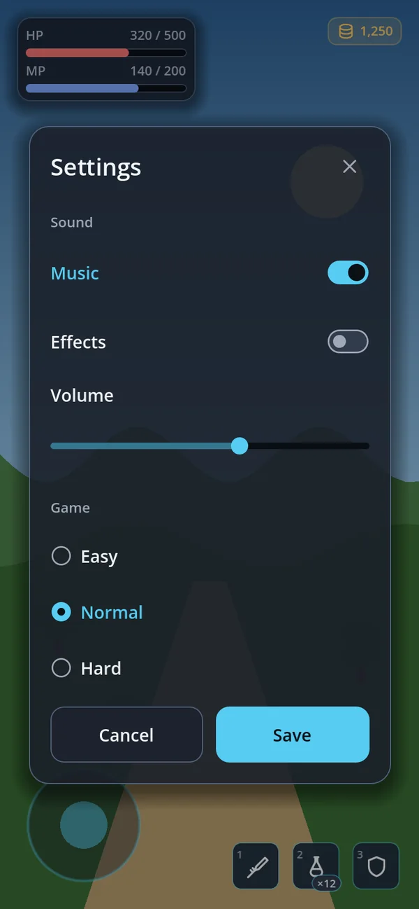
GoSurface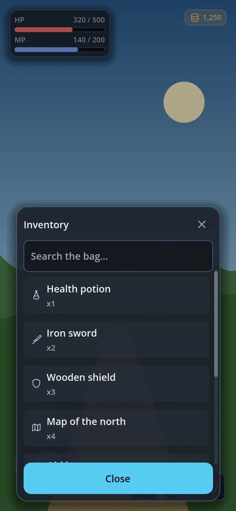
GoSheet
GoDrawer
GoPopover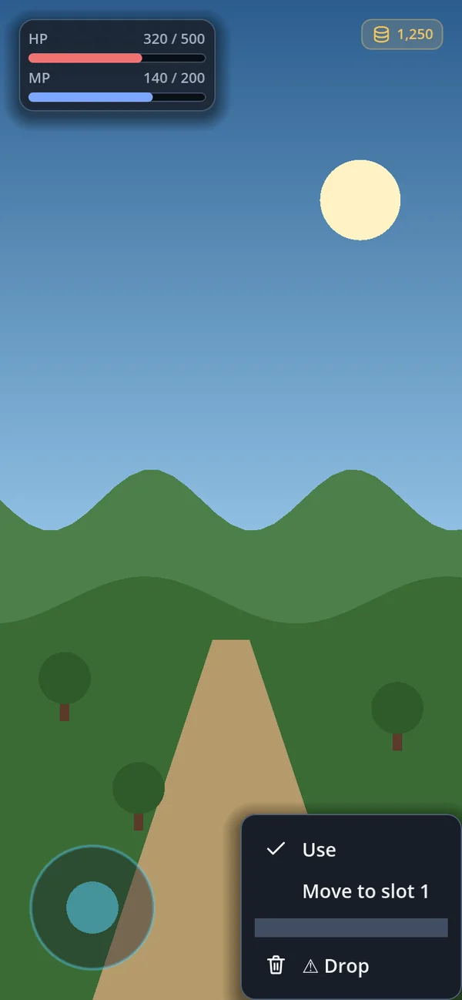
GoContextMenu
GoSnackbar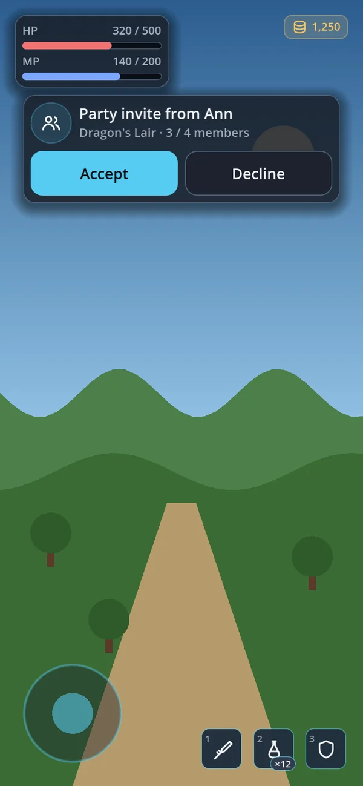
GoPromptCard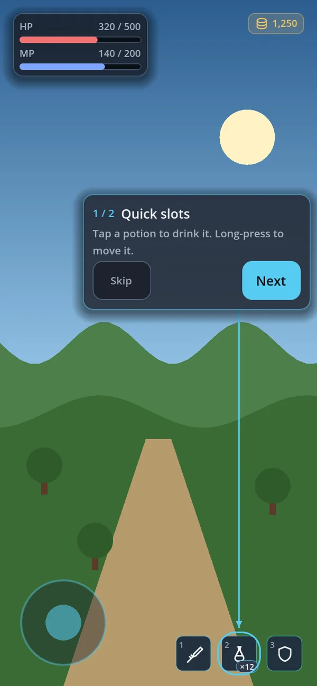
GoCoachMark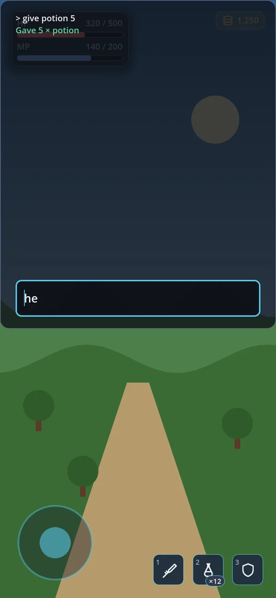
GoConsoleこのページの画像はすべて同じ小さなゲームだ — 左上に体力とマナ、右上にコイン、下にスティックとクイックスロット3つ —
を default_dark で表示し、その上にポップアップを1つ開いている。同じ
ポップアップを12の見た目で →
ポップアップの構造
gohud でゲームを塞ぐポップアップのほとんど — ダイアログ、シート、ポップオーバー、コンボボックスのリスト、
自作のウィンドウ — は1つのノード、GoSurface だ。その部品を一度覚えれば、全部が分かる。
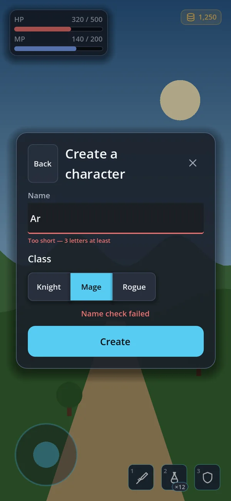
| 部品 | 何か | 触り方 |
|---|---|---|
| レイヤー | ポップアップが載る CanvasLayer。その番号で何を覆うかが決まる。 | GoSurface では自分で決める。ほかは組み込み（表） |
| 幕 | 背後全体にかかる覆い。カードを外れたタップを受け止める。 | scrim_transparent、dismiss_on_scrim、テーマの scrim 色 |
| カード | ウィンドウそのもの — テーマのパネルの面だ。見た目によって丸い、面取り、鍛造、ゼリーになる。 | card、alpha |
| ヘッダー | 任意の戻るボタン、タイトル（最大2行、あふれると「…」）、閉じるボタン。 | set_title() · set_title_key() · set_back() · close_enabled · show_header |
| ツールバー | ヘッダーの下に固定された行 — 検索欄、フィルターのチップ。使うまでは隠れている。 | toolbar |
| 本文 | スクロールする部分。中身はここに入れる。 | body · scroll_body · clear() |
| ステータス行 | 本文とフッターの間に固定された1行 — 「名前の確認に失敗」「保存中…」。 | set_status_text() · set_status_key() · clear_status() |
| フッター | 下に固定されたボタン。使うまでは隠れている。 | footer |
toolbar、ステータス行、footer を使う。本文がスクロールしても、その場に留まる。
await で受け取るダイアログ
GoDialogs は尋ねて、待つ。ノード1つに問いが3種類 — 答えが同じ行に返ってくるので、
コードがプレイヤーの体験する順に読める。
var dialogs := GoDialogs.new()
add_child(dialogs)
if await dialogs.confirm("Buy the starter pack?", "300 gems for a sword, a shield and 10 potions.",
"Buy", "Not now"):
buy_starter_pack()confirm()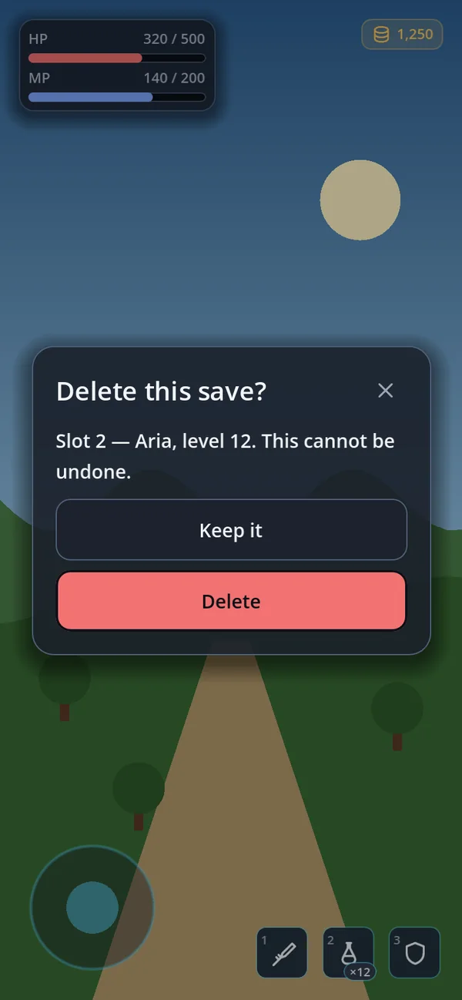
confirm(…, true) — 取り消せない操作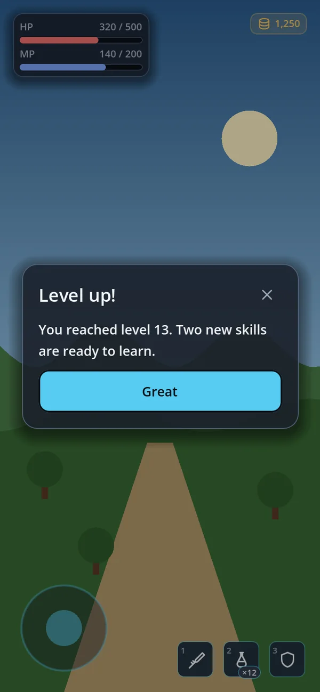
alert()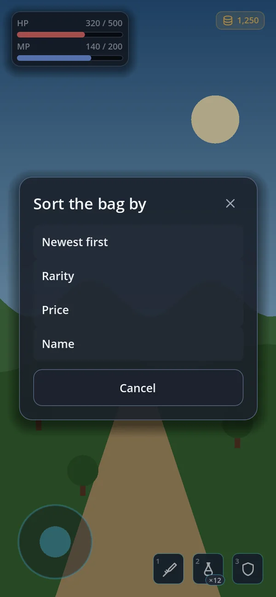
choose()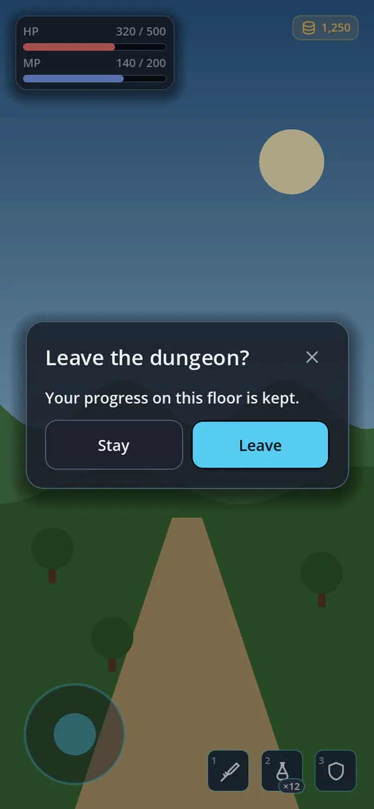
ActionLayout.HORIZONTAL3種類の問い
confirm(title, body, ok_text := "", cancel_text := "", extra := "",
args := {}, destructive := false) -> bool
alert(title, body, ok_text := "", extra := "", args := {}) # 待つなら await する
choose(title, options: Array, cancel_text := "", translate := false) -> int
confirm_key(…) · alert_key(…) # 翻訳キー| 呼び出し | 戻り値 | 用途 |
|---|---|---|
confirm() | true か false | はいかいいえ — 購入、削除、退出、上書き。 |
alert() | なし — 待つなら await する | プレイヤーが必ず見るべきこと：報酬、切れた接続。 |
choose() | 選んだ選択肢の番号、または -1 | いくつかから1つ。選択肢は String か {text, icon, danger, subtitle} だ。 |
confirm_key() · alert_key() | 同上 | 翻訳キーを使う同じ呼び出し — ダイアログを開いたまま言語を変えても、文言が追従する。 |
ボタンの文言を空にすると、キット自身の言葉（GoConfig.text_keys の confirm、cancel）になる。
extra は本文の下に改行して足される。args はタイトルと本文の {placeholders} を
埋める：confirm("Buy {item}?", "It costs {price} gold.", "Buy", "", "", {"item": name, "price": 300})。
どう抜けても答えが返る
| プレイヤーが… | confirm | alert | choose |
|---|---|---|---|
| OK / 選択肢を押す | true | await が終わる | 選んだ選択肢の番号 |
| キャンセルを押す | false | — | -1 |
| ×、Escape、Android の戻るを押す | false | await が終わる | -1 |
幕をタップする（dismiss_on_scrim のときだけ） | false | await が終わる | -1 |
GoDialogs ノードがツリーから外れる | false | await が終わる | -1 |
だから await の後のコードは必ず実行される — ダイアログの下でシーンが変わっても、答えが宙に浮いたまま残ることはない。
取り消せない操作
元に戻せないことには destructive = true を渡す。OK ボタンが塗りつぶしの
Tone.DANGER_SOLID ボタンになる — どの見た目でも赤地に白文字だ。淡く色を付けた危険ラベルでは、ライトテーマで
読めるようにするためにほぼ黒まで暗くするしかない。ウィンドウは使い回されるので、トーンは呼ぶたびに設定し直される。
if await dialogs.confirm("Delete this save?", "Slot 2 — Aria, level 12. This cannot be undone.",
"Delete", "Keep it", "", {}, true):
delete_save(2)ボタンの並べ方
action_layout | すること |
|---|---|
VERTICAL（既定） | ボタンを全幅で縦に積む。どの言語でも安全だ — 長いドイツ語やロシア語のラベルでも窮屈にならない。 |
HORIZONTAL | 1行に半分ずつの幅で並べる。 |
AUTO | 両方のラベルがカードの半分の幅に1行で収まるときだけ横に並べ、収まらなければ積む。言語やサイズが変わるたびに決め直す。 |
action_gap はボタンどうしの間隔、body_gap はその上の間隔だ — ボタン間より広くとると、
問いと選択肢が2つの部分として読める。1つのダイアログにだけ効かせたいときは、開く前に
set_next_action_layout() を呼ぶ。alert のボタン1つは常に全幅をとる。
一度に1つ
1つ開いている間に2つめの confirm() を呼ぶと、即座に false が返る — ダイアログがうっかり
ダイアログの上に積み重なることはない。queue_when_busy を有効にすると、代わりに順番を待つ。alert() は常に待つ。
queue_limit（8）が待ち行列の長さを抑え、あふれると最も古い要求に false が返る。
pending() は待っている要求を数え、clear_pending() はそのすべてに false を返す。
choose() は並ばない：すでにダイアログが開いていれば -1 を返す。
スマホとデスクトップ
choose() は Android と iOS では親指の届く下からシートとして、デスクトップでは中央のカードとして
開く。確認は幅が max_width（420dp）で抑えられ、中央に置かれる。layer_index、
max_width などの export は add_child の前に設定する。ノードがツリーに入るときに適用されるからだ。
var picked := await dialogs.choose("Sort the bag by", [
{"text": "Newest first", "icon": GoIconSet.CLOCK},
{"text": "Rarity", "icon": GoIconSet.STAR},
{"text": "Drop everything", "icon": GoIconSet.TRASH, "danger": true}])
if picked >= 0:
sort_bag(picked)GoSurface — 自作のウィンドウ
ポップアップが問い以上のもの — 設定、キャラクターシート、購入するアイテム — になるなら、
GoSurface の上に組む。セーフエリア、キーボード、固定の行、スクロール、戻る、フォーカス、サイズ変更はもう済んでいる。
var layer := CanvasLayer.new()
layer.layer = 50
add_child(layer)
var window := GoSurface.new()
window.set_title("Settings")
window.close_requested.connect(layer.queue_free)
window.body.add_child(GoStyle.toggle("Music", false))
window.body.add_child(GoStyle.slider(0.0, 1.0, 0.05))
var row := GoStyle.row()
row.add_child(GoStyle.button("Cancel", window.request_close))
row.add_child(GoStyle.button("Save", save_and_close, GoStyle.Tone.PRIMARY))
window.footer.add_child(row)
window.footer.visible = true
layer.add_child(window)close_requested を出すだけだ。ウィンドウを隠すか
解放するかは、持ち主である画面の仕事だ — 「閉じる」が保存なのか、破棄なのか、先に確認するのかは、その画面にしか分からない。
3つの配置
CENTER — 確認、設定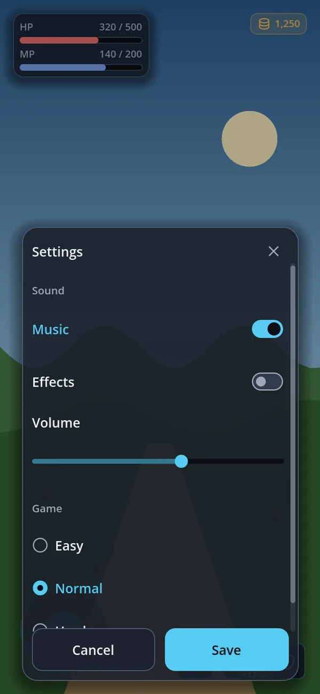
BOTTOM — リスト、管理画面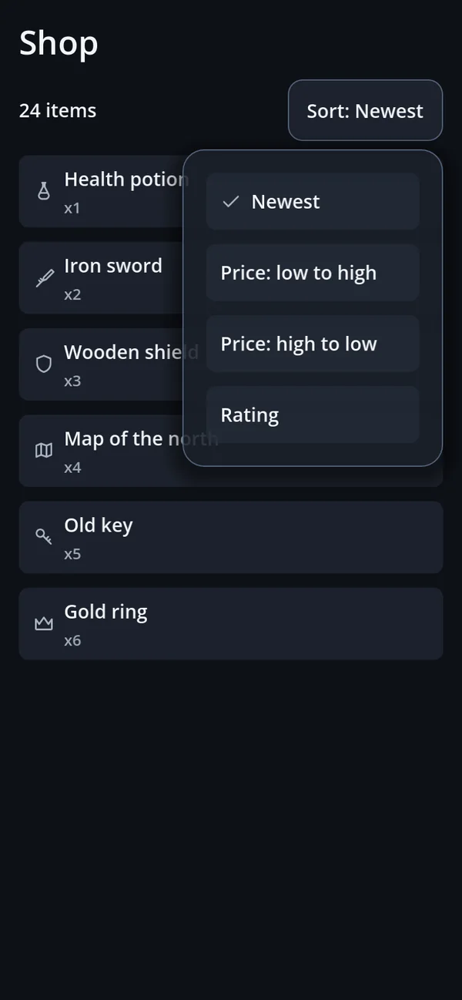
ANCHOR — コントロールの脇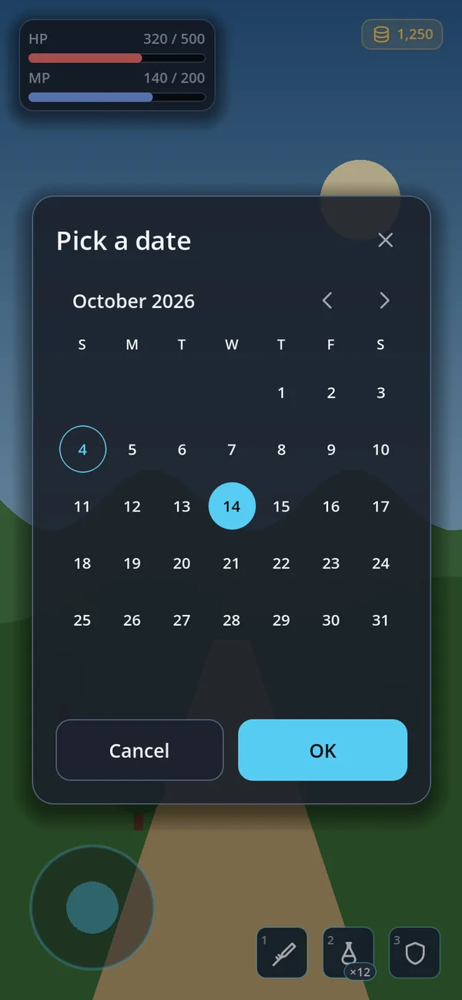
CENTER ウィンドウの中の GoDatePickerANCHOR には anchor_control が要る。カードは anchor_min_width が収まればその右に、
収まらなければ広いほうの側に、それも無理なら画面の内側に置かれ、上の余地のほうが大きければ上向きに開く。動くアンカーには
毎フレーム追従する。大きさは anchor_width（320）と anchor_max_height（520）で決まる。
どこまで大きくなるか
| 寸法 | 規則 | 変える方法 |
|---|---|---|
| 余地 | セーフエリアからキーボードと画面の余白（16dp、短辺の10%を超えない）を引いた範囲。 | — |
| 幅 | 縦向きでは余地の94%、横向きでは72%、最大480dp。 | max_width · GoConfig.surface_width_ratio_* |
| 高さ | 中身の高さ（fit_content）で、余地の68%まで、上限は72%。サイズ変更できない中央のカードは、スクロールを避けるために94%まで伸びることがある。 | height_ratio · max_height_ratio · max_height |
| 密度 | compact が設定されているか、画面の高さが420dp未満（横にしたスマホ）か、中身が収まらないと詰める：余白が減り、間隔が狭まり、タイトルが小さくなる。両方を測り、収まるうちでゆとりのあるほうを選ぶので、ちらつかない。 | compact |
| サイズ変更 | resizable ならタイトルがハンドルになる：30%から上限までドラッグで変えられる。結果は height_changed(ratio) が知らせる。 | resizable |
上限を超える比率は切り詰められ、デバッグビルドで一度だけ警告が出る。キーボードはカードを押し上げ、フォーカスのある 入力欄が見えるようにスクロールする。セーフエリアのおかげで、Android と iOS でもノッチやジェスチャーバーにかからない。
プロパティ
| プロパティ | 既定値 | すること |
|---|---|---|
placement | CENTER | CENTER、BOTTOM、ANCHOR のいずれか |
dismiss_on_scrim | GoConfig.dismiss_on_scrim（false） | 幕をタップすると閉じるよう求める。カードの中で始まったドラッグは数えない。 |
scrim_transparent | false | ゲームを見せたままにする — それでも幕は外側のタップを受け止める。 |
close_enabled | true | × を表示し、Escape と戻るで閉じるよう求められるようにする。 |
show_header · scroll_body · resizable | true · true · false | ヘッダーの行、スクロールする本文、ドラッグのハンドル。 |
fit_content · compact | true · false | 中身に大きさを合わせる。最初から詰めて開く。 |
fade_in | GoConfig.surface_fade_in（false） | 開くときにカードをフェードインする。reduce_motion では即座に出る。 |
alpha | -1（テーマの値） | カードの面の不透明度を比率で。薄くなるのは面だけで、文字は決して薄くならない。 |
initial_focus | なし | 開いたときにフォーカスを受けるコントロール。 |
add_child の前に設定する： scrim_transparent、show_header、resizable、
scroll_body はウィンドウがツリーに入るときに適用される。dismiss_on_scrim、close_enabled、
fade_in、initial_focus は随時読まれる。
シグナルと呼び出し
| 名前 | 何か |
|---|---|
close_requested | ×、Escape、Android の戻る、幕のタップ — そして request_close()。出すのは最前面のウィンドウだけだ。 |
back_requested · set_back(action) | ヘッダーの戻るボタン。ページのあるウィンドウ用。空の Callable を渡すと隠れる。 |
height_changed(ratio) | ハンドルをドラッグした後。 |
is_top() · GoSurface.is_any_open() | このウィンドウが戻るを受け取るウィンドウか — そもそも開いているウィンドウがあるか。 |
relayout() | 今すぐ配置し直す。サイズに関わるプロパティを変えれば、すでに自動で行われる。 |
シートとドロワー
場所の要るリストは、縦に持ったスマホでは親指のある下からせり上がり、タブレットやデスクトップでは 横から入ってくる — そこではシートがゲームを覆ってしまうからだ。
GoSheet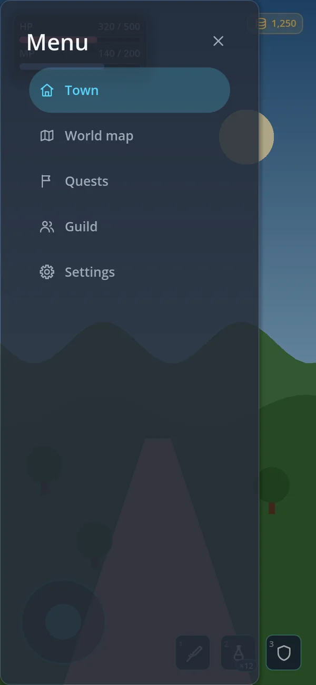
GoDrawer · LEFTGoDrawer · RIGHTGoSheet — 下から出るページ
var sheet := GoSheet.new()
add_child(sheet)
func show_bag(items: Array) -> void:
sheet.open("Bag")
var search := GoStyle.line_edit("Search the bag…")
search.text_changed.connect(filter_bag)
sheet.toolbar().add_child(search)
sheet.toolbar().visible = true
for item in items:
sheet.body.add_child(GoStyle.list_button(GoIconSet.BOX, item.name, show_item.bind(item),
Color.TRANSPARENT, item.description, false, GoIconSet.CHEVRON_RIGHT))
sheet.add_footer(GoStyle.button("Close", sheet.close, GoStyle.Tone.PRIMARY))BOTTOM配置でサイズ変更できるGoSurfaceを持つCanvasLayer（レイヤー10）だ — だから HUD より上に出て、プレイヤーはドラッグで高くできる。open(title)は新しいページを始める：本文、ツールバー、戻るボタンをクリアし、add_footer()で足したものを 解放する。同じシートで別のページを見せるには、もう一度呼ぶ。set_back()は最初のページへ戻るための戻るボタンを 表示する。open_key()は翻訳キーを受け取る。close()は隠す — 解放はしないので、次のopen()は即座に開く。いつ起きたかはclosedとpage_changedが知らせる。height_ratio（0.6）は開くときの高さ、max_height_ratioは上限を引き上げる。dismissable（true）なら幕のタップで閉じる。
set_back() のあるサブページでもそうだ — 1ページ戻るのは画面上の
戻るボタンだけだ。戻るで1段ずつ戻したいなら、sheet.surface の close_requested を自分で処理する。
GoDrawer — 横から
var drawer := GoDrawer.new()
drawer.side = GoDrawer.Side.LEFT
drawer.follow_text_direction = true # 始まりの側：左、アラビア語では右
add_child(drawer)
drawer.body.add_child(GoNavBar.drawer_list([{"icon": GoIconSet.HOME, "text": "Town"},
{"icon": GoIconSet.MAP, "text": "World map"}], 0, go_to))
drawer.open("Menu")- レイヤー80。幅は画面の42%（
width_ratio）で、min_width（320dp）とmax_width（420dp）の間だ — スマホでは画面の大半を覆うので、そこではシートのほうがよい。 - パネルは画面の端まで届き、中身だけがセーフエリアの内側に入る。だから丸めた角が最初の行を切り落とさない。
LEFTはアラビア語でも画面の左だ。「始まりの側」であることが要点ならfollow_text_directionを 有効にする。実際にどちらに出たかはeffective_side()が教えてくれる。open(title)は本文をそのまま残す — 一度だけ埋める。set_title("")はヘッダーを隠す。motion_seconds（0.2）で滑り込み、reduce_motionなら即座に出る。
drawer.close() を呼ぶ — また、GoSurface.is_any_open() はドロワーを数えない
ことに注意する。drawer.is_open() に尋ねる。
コントロールの脇に出るカードとメニュー
プレイヤーが今押したものには、画面の真ん中ではなく指のすぐ横で答えるべきだ。
GoPopoverGoContextMenu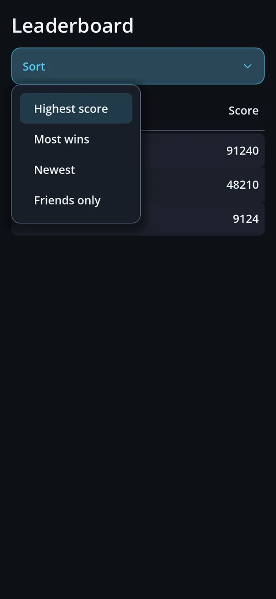
GoStyle.dropdown()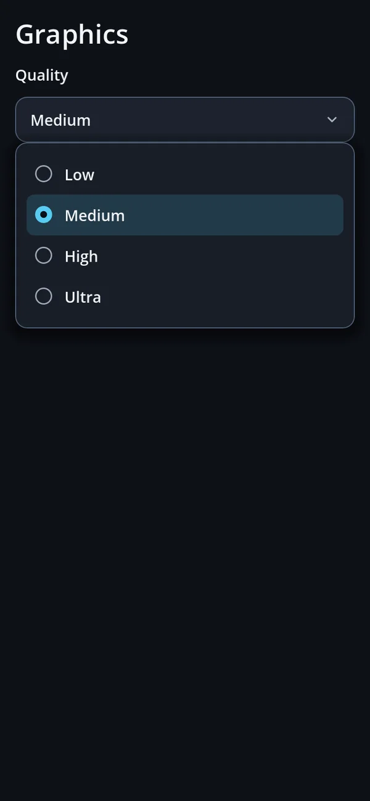
GoStyle.select()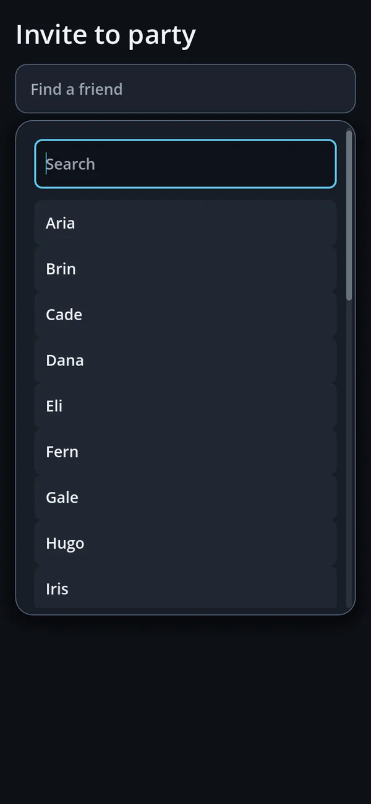
GoComboboxGoPopover — 押したものに付くカード
slot.pressed.connect(func() -> void:
var card := GoStyle.item_card({"icon": GoIconSet.POTION, "title": "Health potion",
"subtitle": "Heals 50 HP · 12 left"}, false)
GoPopover.open(slot, card, {"width": 280}))レイヤー、アンカー、後片付けまで配線済みの ANCHOR サーフェスだ — どのゲームも何度も書く、あの10行である。
一度に1つ：2つめを開くと1つめが閉じる。カードが積み重なると画面が埋まり、どのカードがどのスロットのものか
誰にも分からなくなるからだ。幕は透明だ — 装備を見比べるために開いたカードが、その装備を暗くしてはならない —
が、外側の最初のタップは受け止める。そのタップはカードを閉じるだけで、先へは届かない。
| オプション | 既定値 | すること |
|---|---|---|
title | "" | × 付きのヘッダー。空ならヘッダーなし。 |
width · max_height | 320 · 520 | カードの大きさ。 |
dismissable | true | 外側のタップで閉じる。 |
compact · alpha · translate | false · -1 · false | 詰めた間隔、面の不透明度、タイトルを翻訳キーとして扱う。 |
layer | 95 | 開く先の CanvasLayer。 |
GoPopover.close() と GoPopover.is_open() は static だ。open() はサーフェスを返す —
アンカーがツリーにないときは null なので、await shown.close_requested の前に確かめる。
dismissable = false でタイトルもなければ、画面上にそれを閉じるものは何もない — Escape、戻る、自分で呼ぶ処理だけだ。
GoContextMenu — 長押しと右クリック
var menu := [
{"text": "Use", "icon": GoIconSet.POTION, "action": use},
{"separator": true},
{"text": "Drop", "icon": GoIconSet.TRASH, "action": drop, "danger": true}]
GoContextMenu.attach(slot, menu)
var more := GoStyle.icon_button(GoIconSet.MORE, Callable(), -1, &"more")
more.pressed.connect(func() -> void: GoContextMenu.open_at(more, menu))- 右クリックはすぐに開く。指を0.5秒（
HOLD_SECONDS）置くと開き、12dp を超えて動くと 取り消す — だからリストをスクロールしてもメニューは出てこない。 - 項目は
{text, action, icon, disabled, checked, separator, danger, translate}だ。押したものによって項目が変わるなら、 配列の代わりにCallableを渡す。メニューが開くたびに呼ばれる。 dangerは文言の前に「⚠ 」を付ける — エンジンのメニューは全項目の色をまとめてしか変えられないからだ。- エンジンの
PopupMenuをGoStyle.style_popup()で装ったものだ。開いているサーフェスとしては数えない。
⋯ ボタン
（上のように open_at()）と組み合わせるか、コーチマークで一度教える。
ドロップダウン、セレクト、スプリットボタン
var sort := GoStyle.dropdown("Sort", ["Highest score", "Most wins", {"text": "Friends only", "disabled": true}],
func(index: int) -> void: sort_board(index))
var quality := GoStyle.select(["Low", "Medium", "High", "Ultra"], "Quality")
quality.item_selected.connect(func(index: int) -> void: settings.quality = index)
var send := GoSplitButton.make("Send", send_now, ["Send later", "Save as draft"])3つともエンジンのポップアップメニューを開く：dropdown() は操作を実行する MenuButton、
select() は値を保つ OptionButton、GoSplitButton はメインの操作に矢印側のメニューを
足したもの（chosen(index)）だ。メニューはあえて完全に不透明にしてある — 独立した OS ウィンドウに出るメニューは、
半透明のピクセルを黒くしてしまう。
GoCombobox — 検索できるリスト
var friend := GoCombobox.make(friend_names, -1, "Find a friend")
friend.picked.connect(func(index: int) -> void: invite(friend_names[index]))押すと、レイヤー96に透明な幕とともに脇に留まるリストを開く。項目が search_threshold（8）個以上あると
検索欄が現れてフォーカスを取る。大文字と小文字を区別せず、文言やヒントのどこにでも一致し、結果がなければそう
表示する。リストの幅は list_width（0 = ボタンの幅、最小180dp）で決める。
ゲームを決して止めないポップアップ
プレイしながら読める知らせだ。どれにも幕はない。カードそのもの以外へのタップは ゲームに届く。
GoSnackbar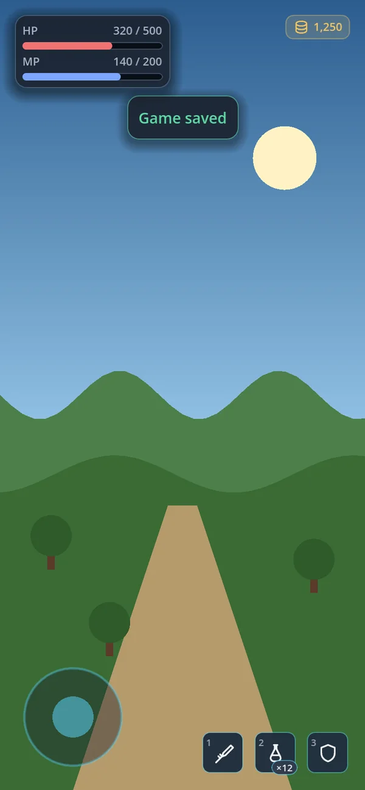
GoNoticeGoPromptCard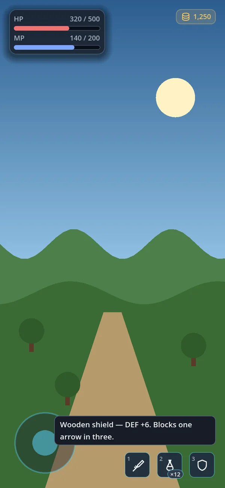
GoStyle.tooltip_node()GoSnackbar — 「元に戻す」付きのメッセージ
var snack := GoSnackbar.new()
add_child(snack)
if await snack.post({"text": "Dropped {name}", "args": {"name": item.name}, "icon": GoIconSet.TRASH,
"actions": ["Undo"], "seconds": 5.0}) == 0:
restore(item)post() のキー | すること |
|---|---|
text · title · args · translate | メッセージ、任意の太字の行、{placeholders}、翻訳キー。 |
tone · icon | アクセントの色（GoTheme.SUCCESS、WARNING…）とアイコン。 |
actions · closable | ボタン — String か {text, action} — と ×。 |
seconds | 表示する時間。負の値ならテーマの notice_duration_ms。0 なら閉じられるまで — そのときはボタンを付ける。 |
post() は押されたボタンの番号を返し、時間切れや閉じられたときは -1 を返す。投稿は
順番待ちし（queue_limit 4、あふれると最も古いものが -1 で外れる）、表示中に同じ文言をもう一度投稿するとタイマーを
延ばすだけになる。下端（または上端、placement）のセーフエリアとキーボードの上、レイヤー90に出る — ドロワーの上でも
読める。tap_to_dismiss（有効）なら、ボタンのないカードはタップで閉じる。カードの外側のタップは常に
ゲームに届く。show_text() と show_key() は1行で書ける形だ。
GoNotice — HUD 上の1行
var notice := GoNotice.new()
hud_corner.add_child(notice)
notice.show_text("Game saved", GoTheme.SUCCESS)
notice.custom_minimum_size.x = notice.preferred_width(340)自分で置く素のパネルだ — GoHudAnchor の中、隅、どこでも。入力もフォーカスも取らないので、
その上を押せば下のボタンに届き、新しいメッセージは古いものを置き換える。幅を与える：
preferred_width(limit) は短い文には自然な幅を返し、長い文は limit の中で折り返す。
set_content() は文字の代わりに任意のコントロールを表示する。
GoPromptCard — 待ってくれる問いかけ
var spot := GoHudAnchor.new()
spot.spot = GoHudAnchor.Spot.TOP_CENTER
spot.reserve_space = false
spot.avoid_peers = true # 体力バーを覆わず、その下へよける
hud.add_child(spot)
var invite := GoPromptCard.new()
spot.add_child(invite)
invite.set_icon(GoIconSet.USERS, Color.TRANSPARENT, true)
invite.set_title("Party invite from Ann")
invite.set_subtitle("Dragon's Lair · 3 / 4 members")
invite.set_actions([{"text": "Accept", "action": accept, "primary": true},
{"text": "Decline", "action": invite.hide}])
invite.fit_width(340)
invite.show()
get_tree().create_timer(15.0).timeout.connect(invite.hide)- 隠れた状態で始まる —
show()を呼ぶ。自前のタイマーはないので、問いに期限があるなら自分で付ける。 - ボタンを押しても閉じない — どうするかは操作が決める。×（
set_closable(true)）はclosedを出す。 fit_width(width)は幅を設定し、フォントから高さを予測する。だから、それに合わせて配置したものが1フレーム後に跳ねない。- 面は
hud_alphaに従う — ウィンドウではなく HUD の一部だ。
GoBanner とツールチップ
GoBanner.make("You're offline.", [{"text": "Retry", "action": reconnect}], GoIconSet.WARNING) はページそのものの中、
コンテンツの上に置かれ、時間切れにならない。ボタンを押すと閉じるが、"keep": true があれば残る。
GoStyle.tooltip_node(text) は _make_custom_tooltip() から返すものだ — 下地（TooltipPanel）は
エンジンが、文字は gohud が描き、260dp を超えると折り返す。ツールチップはマウス用だ。プレイヤーに必要なものを決してその陰に隠さない。
ツアーとコンソール
GoCoachMarkGoConsoleGoCoachMark — 実物のコントロールを巡るツアー
var tour := GoCoachMark.new()
tour.keep_clear = [top_bar]
tour_layer.add_child(tour)
tour.finished.connect(func(completed: bool) -> void: save.tutorial_done = true)
tour.start([{"target": bag_button, "title": "Bag", "body": "Everything you pick up lands here."},
{"target": map_button, "title": "Map", "body": "Tap to open the full map."}])- 実物のコントロールを囲むリングと、その脇のカードだ。対象を押すと進む（その
pressedシグナル、またはステップの"signal"）。「次へ」と「スキップ」はカードにある。隠れた対象は飛ばされる。 - カードは画面の中央（
avoid_center_band）、HUD のアンカー、keep_clearを避けて置かれる。 GoSurfaceが1つでも開いている間、ツアーは隠れて待つ。戻るか Escape はfinished(false)でツアーを終える。- 自前のレイヤーを持たない — 最後に追加するか、HUD より上のレイヤーに追加する。
GoConsole — 開発中のチート
var console := GoConsole.new()
add_child(console)
console.register("give", "give <item> <count>", func(args: PackedStringArray) -> String:
return "gave %s x%s" % [args[0], args[1]] if args.size() >= 2 else "give <item> <count>")
func _unhandled_input(event: InputEvent) -> void:
if event.is_action_pressed(&"dev_console"): console.toggle()レイヤー200 — すべての上なので、ダイアログの上からでもデバッグできる — で、ツリーが一時停止していても動き続ける。 打つそばからコマンドを提案するパレットが出て、上下キーで履歴をたどり、Escape で閉じる。組み込みのキーはない：自分で割り当てる。
debug_only（有効）はリリースビルドでコンソールを止める — open() も run() も。チートコマンドが
プレイヤーの手に渡れば、ゲームの経済は初日で終わる。
レイヤー、戻る、入力
何かが開いている間にプレイヤーが何に触れられるかは、3つの規則で決まる：何が上にあるか、 戻るは誰のものか、タップは誰が受けるか。
何が上にあるか
| レイヤー | そこにあるもの | 設定方法 |
|---|---|---|
| 5 | 自分の HUD（自分で決める） | — |
| 10 | GoSheet | CanvasLayer.layer |
| ~50 | 自作の GoSurface ウィンドウ、ポーズメニュー | 自分の CanvasLayer |
| 80 | GoDrawer | CanvasLayer.layer |
| 90 | GoSnackbar | layer_index |
| 95 | GoPopover | "layer" オプション |
| 96 | GoCombobox のリスト | — |
| 100 | GoDialogs | layer_index |
| 200 | GoConsole | layer_index |
この順には理由がある：スナックバーは今起きたことを知らせるので、ドロワーの上で読める。ポップオーバーは今押したものに 属するので、その上に乗る。ダイアログは問いを投げるので両方を覆う。コンソールはすべてを覆う — ほかが全部おかしくなった ときに開くものだからだ。
戻るは誰のものか
- 答えるのは最前面のウィンドウだけだ。 開いているサーフェスのうち、いちばん高いレイヤーのもの（同じならツリーで最も後のもの）が、
Escape、ゲームパッドのキャンセル（
ui_cancel）、Android の戻る、幕のタップを受け取る。重ねたウィンドウは1枚ずつ閉じ、 まとめては閉じない。 - Android の戻るは1フレーム遅れて処理されるので、1回押してウィンドウが2枚閉じることはない。
- 戻るを持つものが開いている間、Android の戻るはアプリを終了しない（
GoBackPolicyが持ち主を数え、 最後の1つが閉じるとquit_on_go_backを元に戻す）。戻るを受け取る自作のポップアップはGoBackPolicy.acquire()とrelease()を呼ぶ —_exit_treeでも。 - ドロワー、コーチマークのツアー、フォームは、サーフェスが開いている間は身を引く — 戻るはまずサーフェスに届く。
GoConfig.close_on_back（有効）がサーフェスのスイッチだ。
タップは誰が受けるか
- サーフェスは画面全体を覆って入力を止める — 透明な幕でもそうだ。開いている間、下のレイヤーにあるものは 何も押せない。上のレイヤー（スナックバー）は押せる。
- マウスホイールやピンチのジェスチャーもウィンドウで止まる：リストの端を越えてスクロールしても、ゲームはスクロールしない。
- コントロールを通らないゲームの入力 — 移動用の
_unhandled_input、カメラのドラッグ — は止めるべきだ：if GoSurface.is_any_open(): return。これでダイアログ、シート、ポップオーバー、コンボボックスが含まれる。ドロワーには 別にis_open()を尋ねる。 - スナックバー、通知、プロンプトカード、コーチマークは自分のカードでだけ入力を受ける。それ以外の場所では、ゲームが受け取る。
フォーカス
ポインターで開いたウィンドウは何にもフォーカスを与えない — タッチでフォーカスリングが光ることはない。キーボードやゲームパッドで
開くと、閉じるボタン（または initial_focus）がフォーカスを受ける。開いている間フォーカスはウィンドウの中に留まり、
閉じると、それまでフォーカスを持っていたコントロールへ戻る。ダイアログは毎回 OK にフォーカスを置く。
ゲームの一時停止
ツリーを一時停止するとポップアップも止まる — 動き続けるのはコンソールだけだ。ポーズメニューなら、そのレイヤーに
process_mode = PROCESS_MODE_ALWAYS を与える。すると、ゲームが止まっている間もウィンドウ、ボタン、戻るが動き続ける。
すべての見た目で同じポップアップ
このページ冒頭の確認を同じゲームの上に出し、プリセットだけを変えた。コードは同一だ — 残りはテーマ、スキン、アイコンが受け持つ。
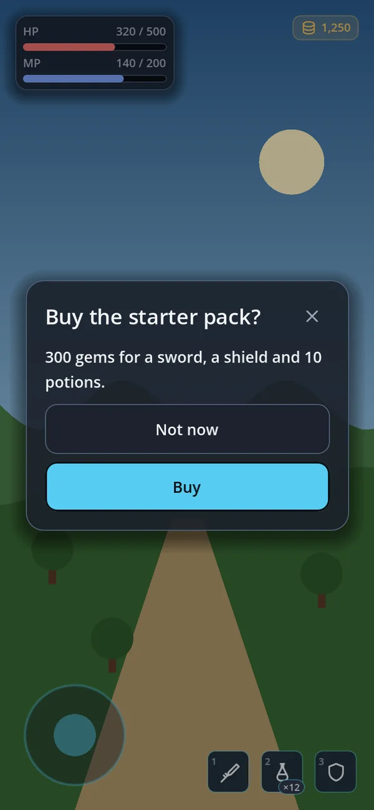
default_dark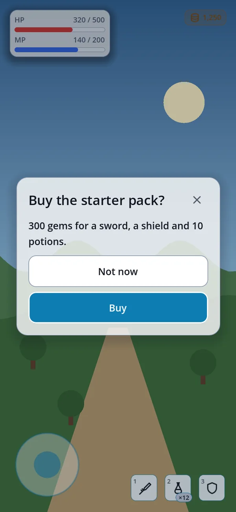
default_light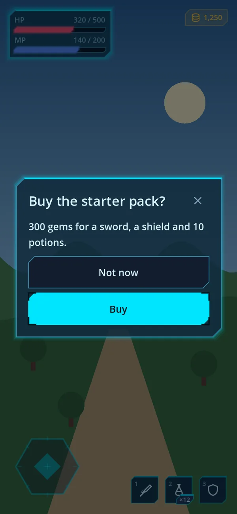
scifi_dark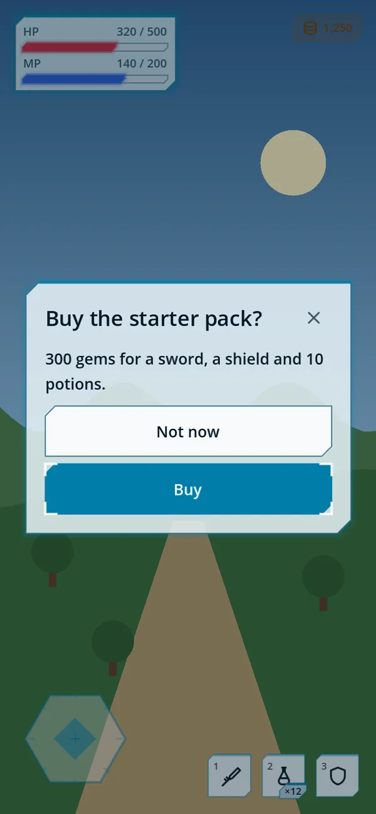
scifi_light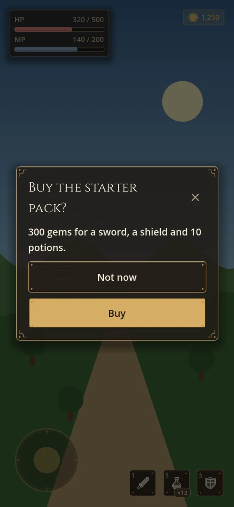
medieval_dark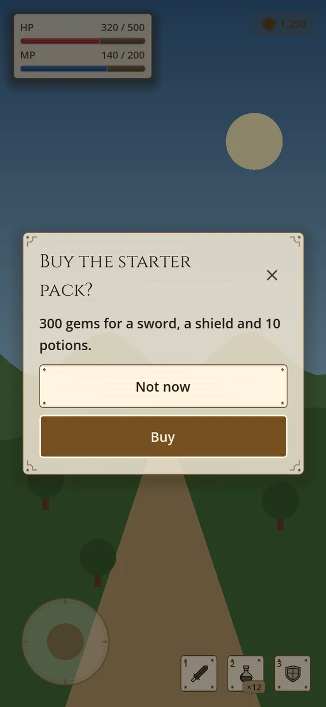
medieval_light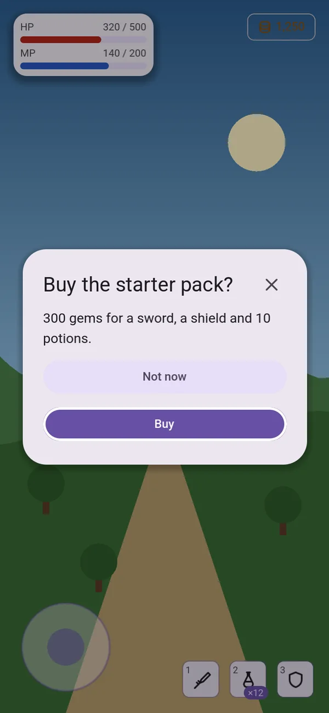
material_light 新登場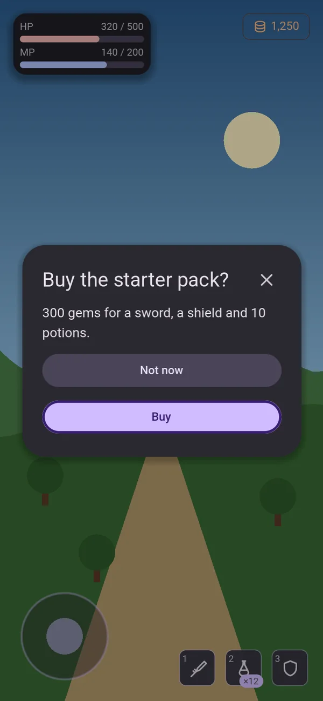
material_dark 新登場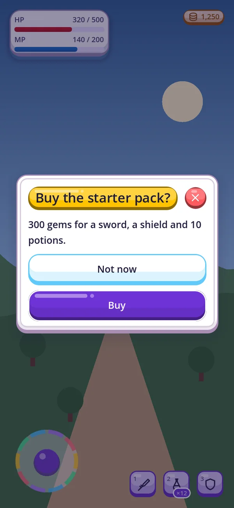
kids_light 新登場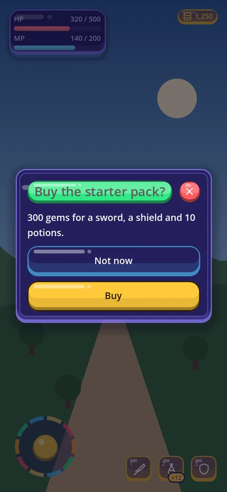
kids_dark 新登場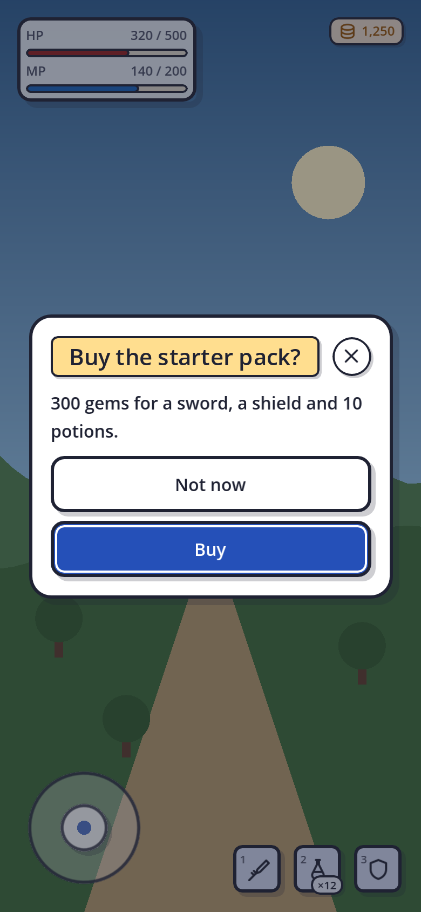
comic_light 新登場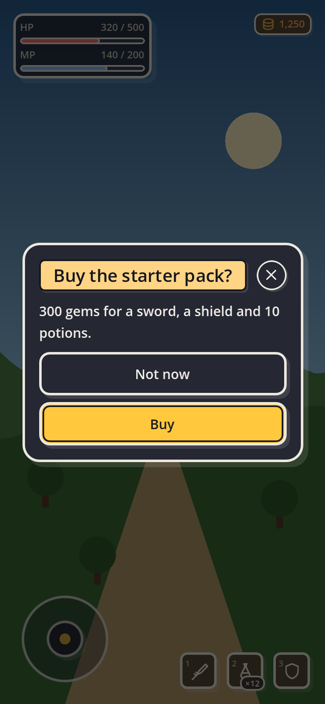
comic_dark 新登場見た目ごとに変わるもの
| 見た目 | ウィンドウ | ヘッダーとボタン |
|---|---|---|
| デフォルト | 丸い角（18dp）、柔らかな影、ゲームの上で80%の不透明度 | 素直なタイトルと ×。主ボタンは浮き上がり、押すと沈む |
| SF | ネオンの縁と発光を持つ面取りの角。縁はアクセント色に染まる | ブラケット型のフォーカス印 |
| 中世 | 鍛造の枠 — 鉄と革、あるいは羊皮紙 — にリベットと角飾り | Cinzel のタイトル |
| Material 3 | 28dp の角、24dp の内側余白、完全に不透明 | Roboto の 24sp 見出し。48dp のターゲットに 40dp の下地を収めたピル型ボタン |
| キッズ | 柔らかな影の付いたゼリーキャンディのカード、完全に不透明 | お日さま色のタイトルリボン（夜はミント）、丸いキャンディの閉じるボタン、押すとぷにっとつぶれるボタン |
| コミック | 太いインクの輪郭とくっきりした影、完全に不透明 | 黄色のタイトルキャプション、インクで描いた丸い閉じるボタン、押すと影が消えるボタン |
スキンでポップアップを装う
スキンは、Theme が届かない部分を決める。ポップアップが呼ぶのは次のフックだ — 自分の
GoSkin サブクラスで上書きする。既定では何もしない。
| フック | 装うもの |
|---|---|
title_plate_box() · title_plate_ink() · title_plate_min_size() | ウィンドウのタイトルの背後に敷く下地。タイトルはその中央に乗り、1行に収まるよう最小サイズ（15）まで縮む。 |
dress_close_button(button) | ウィンドウの × — キッズでは丸いキャンディに、コミックではインクで描いた円盤になる。 |
press_feedback(control) | gohud が作ったボタンに指が触れた瞬間に走る — キッズではぷにっとつぶれる。 |
floating_box() · notice_box() · drawer_box() · banner_box() · overlay_box() | プロンプトカードとコーチマークのカード、スナックバーと通知、ドロワー、バナー、コンソールの面。 |
coach_ring_box() · draw_coach_pointer() | ツアーのリングとポインター。 |
どこまで透けるか
ポップアップは種類ごとに自分の不透明度に従うので、HUD のカードは軽く、ダイアログはしっかりと保てる：ウィンドウ、シート、
ダイアログ、ポップオーバー、コンボボックスは panel_alpha、ドロワーとコーチマークのカードは card_alpha、
プロンプトカードとコンソールは hud_alpha、スナックバーと通知は notice_alpha、メニューは popup_alpha に従う。
Material とキッズはすべてを不透明にする。コミックも同じだが、プロンプトカードとコンソールだけは 92% だ。1種類だけ変えるなら GoConfig.container_alpha_overrides、全部なら
container_alpha（比率 — 0.95）、ウィンドウ1つならその alpha で上書きする。薄くなるのは面だけで、
文字が透けることは決してない。不透明度の詳細 →
すべてのポップアップを形づくる設定
GoConfig（GoUi.config）のフィールドだ。いくつかはウィンドウが作られるときにコピーされるので、
UI を作る前に設定する — あるいは変更後に GoUi.refresh() を呼ぶ。
| フィールド | 既定値 | すること |
|---|---|---|
surface_max_width · surface_max_height | 480 · 700 | ウィンドウの最大の大きさ。 |
surface_height_ratio · surface_max_height_ratio | 0.68 · 0.72 | ふだんの高さと上限（ドラッグの限界でもある）。 |
surface_fit_max_height_ratio | 0.94 | 中身に合わせる中央のカードが、スクロールし始めるまでに伸びられる限度。 |
surface_width_ratio_portrait · …_landscape | 0.94 · 0.72 | 余地に対する幅の割合。 |
dismiss_on_scrim | false | 幕のタップでウィンドウとダイアログが閉じる。ウィンドウ作成時にコピーされる。 |
surface_fade_in · fade_seconds | false · 0.14 | ウィンドウをフェードインするかどうかと、その速さ。 |
close_on_back | true | Escape、ui_cancel、Android の戻るが最前面のウィンドウを閉じる。 |
close_button_visual | 36 | × の見た目の大きさ — タッチターゲットは 48dp のまま。 |
suppress_pointer_focus_ring | true | タッチやマウスで開いたウィンドウにはフォーカスリングを出さない。 |
container_alpha · container_alpha_overrides | -1 · {} | すべての面の不透明度、または種類ごとの不透明度（GoTheme.BOX_*）。 |
reduce_motion | false | フェード、スライド、脈動、ぷにっとつぶれる動きをすべて止める。 |
min_touch_size | 48 | プロンプトカードとコーチマークのボタンの高さ。 |
respect_safe_area | true | ウィンドウをノッチとジェスチャーバーから離す。 |
text_keys · text_overrides | — | キット自身の言葉：閉じる、戻る、確認、キャンセル、次へ、完了、スキップ、検索、空… |
sound_cues · ハプティクス | — | 開いた、閉じた、確定した、キャンセルした、タップしたときに GoFeedback が鳴らす音と振動。 |
レシピ
コピーして貼り付け、文言を変える。ここにある呼び出しは、すべてソースと照らし合わせて確かめてある。
価格入りの購入確認
func buy(item_name: String, price: int) -> void:
if await dialogs.confirm("Buy {item}?", "It costs {price} gold.", "Buy", "", "",
{"item": item_name, "price": price}):
purchase(item_name)保存ボタンを固定した設定ウィンドウ
func open_settings() -> void:
var layer := CanvasLayer.new()
layer.layer = 50
add_child(layer)
var window := GoSurface.new()
window.set_title("Settings")
window.dismiss_on_scrim = true
window.close_requested.connect(layer.queue_free)
window.body.add_child(GoStyle.section("Sound", false))
window.body.add_child(GoStyle.toggle("Music", false))
window.body.add_child(GoStyle.slider(0.0, 1.0, 0.05))
var row := GoStyle.row()
row.add_child(GoStyle.button("Cancel", window.request_close))
row.add_child(GoStyle.button("Save", func() -> void:
save_settings()
layer.queue_free(), GoStyle.Tone.PRIMARY))
window.footer.add_child(row)
window.footer.visible = true
layer.add_child(window)何が間違っているかを伝えるフォーム
var field := GoField.make("Name", GoStyle.line_edit(), "3–12 letters")
window.body.add_child(field)
create_button.pressed.connect(func() -> void:
if name_is_taken():
field.set_error("That name is taken")
window.set_status_text("Name check failed", GoTheme.DANGER)
else:
window.clear_status()
create_character())シートで日付を選ぶ
sheet.open("Delivery date")
var picker := GoDatePicker.make({"year": 2026, "month": 10, "day": 14}, func(date: Dictionary) -> void:
delivery = date
sheet.close())
picker.min_date = GoDatePicker.today()
sheet.body.add_child(picker)ポーズメニュー
func pause() -> void:
get_tree().paused = true
var layer := CanvasLayer.new()
layer.layer = 50
layer.process_mode = Node.PROCESS_MODE_ALWAYS # ゲームが一時停止しても動き続ける
add_child(layer)
var menu := GoSurface.new()
menu.set_title("Paused")
menu.close_requested.connect(func() -> void:
get_tree().paused = false
layer.queue_free())
menu.body.add_child(GoStyle.button("Resume", menu.request_close, GoStyle.Tone.PRIMARY))
menu.body.add_child(GoStyle.button("Settings", open_settings))
menu.body.add_child(GoStyle.button("Quit to title", quit_to_title, GoStyle.Tone.DANGER))
layer.add_child(menu)ポップアップを待つゲームプレイ
func _unhandled_input(event: InputEvent) -> void:
if GoSurface.is_any_open() or drawer.is_open():
return
handle_gameplay(event)落とし穴
GoSurfaceは自分では解放されない。close_requestedをつながないと、× を押しても何も起きない。add_childの後に設定したオプション —scrim_transparent、show_header、resizable、scroll_body、そしてGoDialogsのlayer_indexとmax_width— は適用されない。- 2つめの
confirm()は即座にfalseを返す。 2つの問いが重なりうるならqueue_when_busyを有効にする。 - Enter で確定する。 取り消せないダイアログでも OK にフォーカスがある。
- シートで戻るを押すと、シートが閉じる。 サブページが閉じるのではない。
- Escape はドロワーを閉じず、
is_any_open()もドロワーを見ない。 - ポップオーバーやコンボボックスのリストは、閉じるまでゲームを塞ぐ。 幕が透明でもそうだ — しかも
dismissable = falseでタイトルのないポップオーバーには、画面上に閉じる手段がない。 - プロンプトカードは隠れた状態で始まり、 時間切れもない。
seconds: 0でボタンのないスナックバーは、いつまでも消えない。 しかも既定では自分のカードへのタップを受け取る。- 誰も知らない長押しは、誰も使わない機能だ。
⋯も表示する。 - 一時停止したツリーはポップアップも止める。 そのレイヤーに
PROCESS_MODE_ALWAYSを使う。 - 幅のない通知は いちばん狭く縮む —
preferred_width()を使う。 - スナックバーで尋ねず、ダイアログで知らせない。 無視された問いは消えてしまうし、知らせのためにゲームを止めるべきではない。